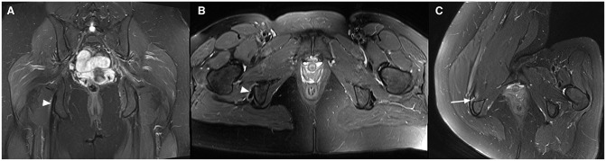
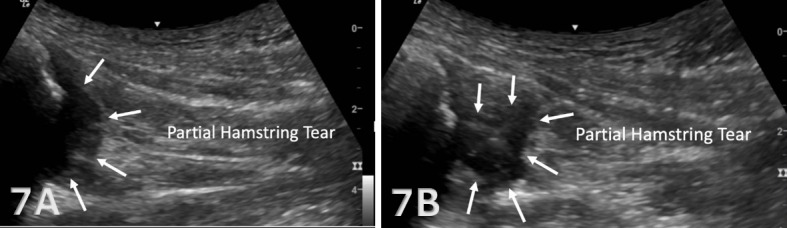
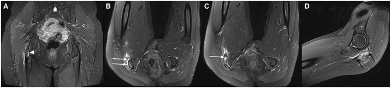
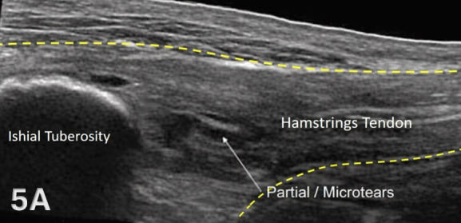

383 — Bệnh gân gốc cơ gân kheo gần (proximal hamstring tendinopathy): ngưỡng dày gân, MRI tư thế gấp hông & khi nào can thiệp
Tags: pattern:benh-gan pattern:day-gan pattern:phu-quanh-gan pattern:dau-mong-sau vung:mong-sau vung:hong anatomy:hamstring protocol:MRI-hong protocol:sieu-am-msk protocol:tiem-huong-sieu-am incidentaloma:khong
Mức chắc chắn (certainty): tổng hợp y văn (literature synthesis) — ghép nghiên cứu MRI tư thế gấp hông 38 bệnh nhân/67 gân (Orthop J Sports Med 2024, PMC11425786), RCT 100 bệnh nhân vật lý trị liệu vs sóng xung kích (Am J Sports Med 2025, PMC12657663), tổng quan có hệ thống 12 nghiên cứu/424 bệnh nhân (Int J Sports Phys Ther 2021, PMC8016446), tổng quan 13 nghiên cứu điều trị bảo tồn (Sports 2023, PMC10053564), nghiên cứu tiêm collagen heo 28 vận động viên (Sports 2025, PMC12567699), tiêm corticoid dưới huỳnh quang 18 vận động viên/22 ca (Orthop J Sports Med 2014, PMC4555570), mổ 17 vận động viên (J Orthop Traumatol 2013, PMC3667353), siêu âm chẩn đoán gân gốc cơ gân kheo (Int J Sports Phys Ther 2026, PMC13046448) và tổng quan bệnh gân hông (Rheumatol Adv Pract 2024, PMC11003818). Không có ca do nhóm tự chụp.
Câu hỏi thực hành: nữ 38 tuổi, chạy bộ 40 km/tuần, đau mông dưới bên phải 8 tháng, đau tăng khi ngồi lâu, chạy lên dốc, duỗi hông; ấn đau ngay ụ ngồi, nghiệm pháp Puranen–Orava dương tính. MRI khung chậu thường: gân “gần như bình thường”, chỉ phù nhẹ quanh gân. Câu hỏi: có phải bệnh gân gốc cơ gân kheo không, cần chụp lại tư thế nào, ngưỡng dày gân ra sao, và khi nào tiêm – khi nào mổ? Bài chốt ba quyết định: (1) chẩn đoán là lâm sàng + hình ảnh tương ứng, không phải chỉ dựa vào độ dày gân; (2) MRI tư thế gấp hông 90° phát hiện thêm tổn thương ở 71% bệnh nhân có MRI thường âm; (3) điều trị nền là tập tải tiến triển ở độ dài cơ – gân, tiêm chỉ là bổ trợ, mổ sau ≥ 6 tháng thất bại.
1. Tổng quan bệnh học – cơ chế hình ảnh: vì sao đau ở ụ ngồi khi ngồi
- Giải phẫu: ba cơ gân kheo bám vào ụ ngồi (ischial tuberosity): cơ nhị đầu đùi đầu dài + cơ bán gân tạo gân chung (conjoint tendon) ở mặt sau–trong; cơ bán màng bám riêng, sâu và ra ngoài hơn; thần kinh tọa chạy ngay sau–ngoài gân chung. Túi hoạt dịch ụ ngồi (ischio-gluteal bursa) nằm giữa gân và xương, là nguồn đau chồng lấp.
- Bệnh học: PHT là bệnh thoái hóa gân do tải lặp lại (tendinopathy), không phải viêm: rối loạn sắp xếp collagen, tăng mạch máu bất thường, giảm độ bền chịu lực, kèm chèn ép khi ngồi (lực nén + lực kéo đồng thời). Vì vậy hình ảnh thấy dày gân, giảm âm/tăng tín hiệu trong gân, phù quanh gân, không thấy dịch khớp.
- TẠI SAO đau khi ngồi: tư thế ngồi làm ụ ngồi tì trực tiếp vào gân, tăng lực nén tại vùng bám tận; chạy lên dốc/duỗi hông mạnh làm tăng lực kéo — hai cơ chế cộng lại giải thích kiểu đau khu trú sâu ở mông dưới, không lan theo khoanh da.
- Ngưỡng định lượng trên siêu âm (bắt buộc nhớ):
| Thông số | Giá trị bình thường | Nguồn |
|---|---|---|
| Độ dày gân chung tại ụ ngồi (lát cắt ngang) | 4–6 mm | Int J Sports Phys Ther 2026, PMC13046448 |
| Độ dày gân cơ bán màng | 5–7 mm | Int J Sports Phys Ther 2026, PMC13046448 |
| So sánh bên đối diện | Bắt buộc; bất đối xứng là dấu hiệu gợi ý | PMC13046448 |
| Gân dày + giảm âm + mất cấu trúc sợi + Doppler (+) | Bất thường, phù hợp PHT | PMC13046448 |
- Không có một ngưỡng mm tuyệt đối được xác nhận cho PHT — các nghiên cứu dùng so sánh bên đối diện + mất cấu trúc sợi + phù quanh gân, không dùng một con số cố định. Bài ghi rõ “chưa có ngưỡng tuyệt đối”, không bịa.
- Giá trị của MRI tư thế gấp hông: 38 bệnh nhân/67 gân có triệu chứng PHT được chụp MRI chuẩn (nằm ngửa) và gấp hông 90° (nằm nghiêng). Kết quả: 71% bệnh nhân thấy tổn thương nặng hơn ở tư thế gấp hông; 16% gân được chẩn đoán lành ở tư thế chuẩn chuyển thành rách; trong số gân “bình thường” ở tư thế chuẩn, 6% thành rách và 11% thành bệnh gân khi gấp hông (Orthop J Sports Med 2024, PMC11425786).
- Vì sao gấp hông lại lộ tổn thương: gấp hông 90° làm gân căng và bị kéo ra khỏi ụ ngồi, đồng thời mô mềm quanh gân giãn ra, nên phần rách mặt dưới/nội gân không còn bị xương che lấp — đây là mẹo “đọc lại bằng tư thế gây triệu chứng”.
- Tần suất và đối tượng: PHT gặp ở vận động viên chạy nước rút, chạy dài, nhảy rào và cả người ít vận động ngồi nhiều; tổng quan 12 nghiên cứu gộp 424 bệnh nhân (229 nam) cho thấy bằng chứng can thiệp còn rất thấp (Int J Sports Phys Ther 2021, PMC8016446). Không có số prevalence dân số đáng tin — bài không đưa con số giả.
2. Mẫu hình + chẩn đoán phân biệt theo vị trí đau (Gamut)
- Mẫu hình 1 — “đau sâu mông dưới + ngồi lâu + ấn đau ụ ngồi”: PHT; phân biệt viêm túi hoạt dịch ụ ngồi (đau cùng chỗ, nhưng dịch túi hoạt dịch là dấu chốt).
- Mẫu hình 2 — “đau khi chạy nước rút/duỗi hông + đau ụ ngồi”: PHT hoặc rách/đứt gân gốc; đứt gân có mất liên tục sợi + khoảng giảm âm + dịch/máu tụ, đau dữ dội khởi phát đột ngột.
- Mẫu hình 3 — “đau mông sâu + xoay trong hông + bước dài”: hẹp khoảng ischiofemoral (IFI) — IFS < 15 mm, QFS < 10 mm, phù cơ quadratus femoris (bài 382).
- Mẫu hình 4 — “đau mông + lan chân theo khoanh da”: hội chứng cơ hình lê hoặc đau rễ thắt lưng; IFS bình thường, tín hiệu thần kinh tọa có thể bất thường.
- Mẫu hình 5 — “đau mặt trong ụ ngồi”: rách gân cơ khép lớn (adductor magnus ischiocondylar) — đau trong, gần gốc dương vật/đáy chậu, khác PHT.
- Mẫu hình 6 — “đau đáy chậu, rát, không đau khi ấn ụ ngồi”: đau thần kinh thẹn (pudendal neuralgia) — không có tổn thương gân trên MRI.
- Gợi nhớ theo cơ chế: nén khi ngồi → PHT, bursitis; kéo khi chạy → PHT, rách gân; xoay hông → IFI, piriformis; lan theo khoanh da → rễ/thần kinh ngoại biên.
3. Bảng so sánh phân biệt (ma trận đối chiếu)
| Thực thể (entity) | Hình ảnh điển hình | Chốt vào (rule-in) | Chốt loại (rule-out) | Gợi ý xác nhận |
|---|---|---|---|---|
| Bệnh gân gốc cơ gân kheo (PHT) | Gân dày (so bên đối diện), giảm âm/tăng tín hiệu trong gân, mất cấu trúc sợi, phù quanh gân, Doppler (+) | Đau khu trú ụ ngồi + ngồi lâu/running + ấn đau + hình ảnh gân tương ứng | Gân bình thường + không phù quanh gân + đau lan theo khoanh da → tìm nguyên nhân khác | Siêu âm LAX/SAX so hai bên; MRI T2 Dixon; MRI gấp hông 90° nếu chuẩn âm |
| Viêm túi hoạt dịch ụ ngồi (ischial bursitis) | Dịch túi hoạt dịch giữa gân và ụ ngồi, dạng ổ dịch khu trú, có thể có vách | Ổ dịch túi hoạt dịch + đau khi ngồi | Không có dịch túi + gân dày → PHT | Siêu âm động; MRI T2FS; hút dịch |
| Hẹp khoảng ischiofemoral (IFI) | IFS < 15 mm (Se 76,9%/Sp 81,0%), QFS < 10 mm (Se 78,7%/Sp 74,1%), phù cơ quadratus femoris | Đau mông sâu + nghiệm pháp IFI + IFS/QFS hẹp + phù cơ | IFS > 18 mm + cơ quadratus bình thường → không IFI | MRI trục T2FS; tiêm hướng siêu âm (bài 382) |
| Hội chứng cơ hình lê | Phì đại/viêm cơ hình lê, tín hiệu thần kinh tọa, IFS bình thường | Đau khi xoay trong + chèn ép cơ hình lê + IFS bình thường | IFS hẹp + phù cơ quadratus → IFI | MRI trục + MR neurography |
| Rách/đứt gân gốc cơ gân kheo | Mất liên tục sợi, khoảng giảm âm, dịch/máu tụ, gân co rút; MRI thấy di lệch | Khởi phát đột ngột “bốp” + yếu duỗi hông + mất liên tục sợi | Sợi còn liên tục, chỉ dày + phù → PHT | Siêu âm động; MRI; đo khoảng co rút |
| Rách gân cơ khép lớn (ischiocondylar) | Tổn thương mặt trong ụ ngồi, phù/giảm âm gân cơ khép lớn | Đau mặt trong ụ ngồi/đáy chậu + đau khi khép đùi | Đau mặt sau–ngoài, gân chung dày → PHT | Siêu âm mặt trong; MRI |
| Đau thần kinh thẹn | Không có tổn thương gân; có thể dày thần kinh thẹn trên MR neurography | Đau rát đáy chậu, đau khi ngồi nhưng không đau khi ấn ụ ngồi | Ấn đau khu trú ụ ngồi + gân dày → PHT | Khám thần kinh; block chẩn đoán |

*(A) Coronal và (B) axial tư thế chuẩn: chỉ phù nhẹ quanh gân (đầu mũi tên), gân “gần như bình thường”. (C) Axial khi gấp hông phải 90°: lộ rách một phần gân cơ bán màng (mũi tên). Nguồn: Orthop J Sports Med 2024, PMCID PMC11425786, CC BY 4.0 — nguyên bản, giữ nhãn A–C.*Đọc đúng vị trí tổn thương trên mặt cắt
- Gân chung (nhị đầu đầu dài + bán gân) nằm mặt sau–trong ụ ngồi; cơ bán màng bám sâu và ra ngoài — trên axial, tổn thương bán màng nằm phía ngoài gân chung, dễ bị đọc nhầm là “gân chung bình thường”.
- Phù quanh gân đơn thuần có thể do túi hoạt dịch, chèn ép, hoặc sau tiêm — không đồng nghĩa bệnh gân.
- So sánh bên đối diện là bắt buộc trên siêu âm; trên MRI, đặt ROI đối xứng và đọc cả hai bên.
4. Protocol chụp + ngưỡng & thuật toán điều trị
- Chẩn đoán lâm sàng trước, hình ảnh sau: tổng quan khuyến cáo PHT có thể chẩn đoán bằng bệnh sử + nghiệm pháp, không cần hình ảnh thường quy; chỉ chụp khi chẩn đoán không chắc, không đáp ứng điều trị, hoặc nghi rách/đứt (Rheumatol Adv Pract 2024, PMC11003818).
- Nghiệm pháp: ấn trực tiếp ụ ngồi; Puranen–Orava (duỗi hông + duỗi gối kháng lực); bent-knee stretch và modified bent-knee stretch; đau khi ngồi xổm/ngồi lâu.
- Siêu âm MSK (đầu tay):
- Tư thế nằm nghiêng, chi trên, hông hơi gấp, gối hơi gấp để gân căng nhẹ; đầu dò thẳng cho lát cắt dọc (LAX) và ngang (SAX) tại ụ ngồi.
- Đo độ dày gân chung 4–6 mm, bán màng 5–7 mm; tìm mất cấu trúc sợi, giảm âm, phù quanh gân, Doppler (+); so bên đối diện.
- Động: gấp/duỗi gối để xem sợi gân trượt và phát hiện rách ẩn.
- MRI (khi siêu âm không kết luận hoặc cần đánh giá rách):
- Chuẩn: khung chậu/đùi T1, T2 fat-sat/Dixon, axial + coronal + sagittal.
- Nếu MRI chuẩn âm mà vẫn nghi PHT: chụp thêm tư thế gấp hông 90° (nằm nghiêng) — phát hiện thêm 71% tổn thương nặng hơn, 16% chuyển từ bệnh gân thành rách (PMC11425786).
- Đọc: dày gân, tăng tín hiệu trong gân, phù quanh gân, phù tủy xương ụ ngồi, dịch túi hoạt dịch, di lệch/co rút gân.
- Điều trị theo bậc:
- Giáo dục + điều chỉnh tải: giảm ngồi lâu (đệm chữ U, ngồi nghiêng), giảm chạy dốc/tăng tốc đột ngột; tập tải tiến triển ở độ dài cơ–gân: hông gấp 110°, gối gấp 45–90°, kèm ổn định vùng chậu–thắt lưng (Sports 2023, PMC10053564).
- Sóng xung kích: RCT 100 bệnh nhân cho thấy không khác vật lý trị liệu về VISA-H/GROC; nhưng nhóm sóng xung kích hài lòng hơn và sức khỏe chung tốt hơn ở 52 tuần — có thể dùng như lựa chọn (Am J Sports Med 2025, PMC12657663).
- Tiêm: corticoid quanh gân dưới hướng dẫn (không tiêm trong gân): VAS 7,22 → 3,94, 38,8% hết đau hoàn toàn ở trung bình 24,8 tháng (Orthop J Sports Med 2014, PMC4555570). Collagen heo 3 lần cách tuần: trở lại thể thao 57 vs 72 ngày (p = 0,0083), HR 5,35 (Sports 2025, PMC12567699). Bằng chứng còn yếu, không dùng thay tập.
- Mổ: sau ≥ 6 tháng thất bại bảo tồn; 17 vận động viên mổ bóc gân thoái hóa: trở lại chạy 2,4 tháng, trở lại thể thao 4,4 tháng, 88% kết quả tốt (J Orthop Traumatol 2013, PMC3667353).
- Thuật toán một lượt:
flowchart TD
A[Dau mong duoi + ngoi lau<br/>+ an dau u ngoi] --> B[Kham: Puranen-Orava,<br/>bent-knee stretch]
B --> C{Chan doan lam sang ro?}
C -->|Co| D[Giao duc + dieu chinh tai<br/>tap tai tien trien 12 tuan]
C -->|Khong| E[Sieu am MSK so hai ben]
E --> F{MRI can thiet?<br/>nghi rach, that bai dieu tri}
F -->|Co| G[MRI T2 Dixon chuan]
G --> H{MRI chuan am<br/>ma van nghi PHT?}
H -->|Co| I[MRI gap hong 90 do]
H -->|Khong| J[Chan doan theo hinh anh]
D --> K{Do dau va chuc nang<br/>sau 12 tuan?}
K -->|Tot| L[Duy tri tai, tang dan<br/>theo VISA-H]
K -->|Khong| M[Them song xung kich<br/>hoac tiem quanh gan]
M --> N{Sau 6 thang<br/>that bai?}
N -->|Khong| L
N -->|Co| O[Hoi chan mo<br/>boc gan thoai hoa / sua rach]
- Theo dõi: dùng VISA-H (0–100) và mức đau khi ngồi; trong RCT, VISA-H tăng từ 49,8–50,7 lên 73,9–74,7 sau 52 tuần ở cả hai nhóm — cải thiện lớn nhưng không khác giữa vật lý trị liệu và sóng xung kích (PMC12657663).
5. Biến thể bình thường và cạm bẫy
- MRI chuẩn âm không loại trừ PHT: 6% gân “bình thường” trên MRI chuẩn hóa ra rách và 11% ra bệnh gân khi chụp gấp hông 90° (PMC11425786). Nếu bệnh cảnh điển hình, đừng dừng ở “MRI bình thường”.
- Dày gân không triệu chứng: người chạy nhiều có thể dày gân không đau; chỉ chẩn đoán PHT khi đau khu trú + nghiệm pháp + hình ảnh tương ứng.
- Nhầm túi hoạt dịch với bệnh gân: ổ dịch giữa gân và xương là bursitis; điều trị khác (hút dịch + corticoid vào túi), không tập nặng ngay.
- Tiêm corticoid trong gân: làm yếu gân và tăng nguy cơ rách; chỉ tiêm quanh gân/dưới hướng dẫn, và không lặp lại nhiều lần.
- Kéo giãn mạnh khi đang đau: làm tăng lực nén tại ụ ngồi; ưu tiên tải ở độ dài trung gian, tăng dần.
- Bỏ sót rách/đứt gân: đau đột ngột + yếu duỗi hông + không duỗi được gối chống trọng lực → tìm mất liên tục sợi, co rút, dịch/máu tụ; đừng điều trị như PHT đơn thuần.

7A–7B: mất liên tục cấu trúc sợi và khoảng giảm âm sát bám tận kèm dịch/máu tụ — hình ảnh rách/đứt một phần, khác với chỉ dày gân + vi rách trong PHT. Nguồn: Int J Sports Phys Ther 2026, PMCID PMC13046448, CC BY-NC 4.0 — nguyên bản.- Đau lan chân: nếu có lan theo khoanh da, dị cảm, yếu cơ → khám thần kinh/tìm nguyên nhân rễ hoặc thần kinh tọa, không quy hết cho gân.
- Vận động viên lớn tuổi: thoái hóa gân kèm phù tủy xương ụ ngồi có thể gặp; phù tủy đơn thuần không đồng nghĩa rách.
6. Tự lượng giá — Blind Quiz
Ca 1 — Nữ 38 tuổi, đau mông dưới phải; MRI chuẩn (A, B) và MRI gấp hông phải 90° (C).
- Câu hỏi: hình A/B có bất thường rõ không? Hình C thay đổi gì? Vì sao phải chụp thêm tư thế gấp hông?
Bấm để hiện đáp án (findings + chẩn đoán)
- Findings: (A) coronal và (B) axial tư thế chuẩn: phù nhẹ quanh gân (đầu mũi tên), gân gần như bình thường, không thấy rách rõ. (C) axial gấp hông 90°: lộ rách một phần gân cơ bán màng (mũi tên).
- Chẩn đoán: bệnh gân gốc cơ gân kheo có rách một phần — tổn thương bị che lấp ở tư thế chuẩn.
- Vì sao: gấp hông làm gân căng và tách khỏi ụ ngồi, mở ra phần rách mặt dưới; trong loạt 38 bệnh nhân, 71% thấy tổn thương nặng hơn, 16% chuyển từ bệnh gân thành rách.
- Nguồn ảnh: Orthop J Sports Med 2024, PMCID PMC11425786, CC BY 4.0.
Ca 2 — Nam 57 tuổi, đau mông phải; (A) coronal chuẩn, (B–C) axial gấp hông, (D) sagittal gấp hông.

- Câu hỏi: tổn thương ở gân nào? Mức độ rách thay đổi thế nào giữa tư thế chuẩn và gấp hông? Đo gì trên sagittal?
Bấm để hiện đáp án (findings + chẩn đoán)
- Findings: (A) coronal chuẩn: rách một phần gân cơ bán màng (đầu mũi tên). (B, C) axial gấp hông: rách lớn hơn nhiều, gần như bong gân hoàn toàn (mũi tên trắng). (D) sagittal gấp hông: đo chiều dài đoạn rách giữa hai mũi tên đen.
- Chẩn đoán: rách gân cơ bán màng tiến triển — mức độ nặng hơn được phát hiện nhờ tư thế gấp hông.
- Ý nghĩa: mức rách quyết định bảo tồn hay mổ; MRI chuẩn có thể đánh giá thấp tổn thương.
- Nguồn ảnh: Orthop J Sports Med 2024, PMCID PMC11425786, CC BY 4.0.
Ca 3 — Bệnh nhân chạy dài, đau ụ ngồi; siêu âm dọc (LAX) tại ụ ngồi.

- Câu hỏi: mô tả 3 dấu hiệu bất thường? Độ dày bình thường của gân chung là bao nhiêu? Có cần sinh thiết không?
Bấm để hiện đáp án (findings + chẩn đoán)
- Findings: gân dày tại ụ ngồi; mất cấu trúc sợi bình thường; vùng giảm âm trong gân sát bám tận = rách một phần/vi rách; bờ xương ụ ngồi là đường tăng âm cong có bóng lưng.
- Ngưỡng: gân chung bình thường 4–6 mm, bán màng 5–7 mm; so bên đối diện.
- Chẩn đoán: bệnh gân gốc cơ gân kheo — chẩn đoán lâm sàng + siêu âm; không sinh thiết, không cần mô bệnh.
- Nguồn ảnh: Int J Sports Phys Ther 2026, PMCID PMC13046448, CC BY-NC 4.0 — nguyên bản.
Bài liên quan chéo
- 382 – Ischiofemoral impingement
- 558 – Hội chứng cơ hình lê
- 370 – Nhiễm trùng cơ xương khớp
- 305 – Đau xương cụt (coccygodynia)
- 228 – Thoát vị đĩa đệm thắt lưng Pfirrmann/Modic
- 301 – Protocol MSK
- 300 – Tổng quan hệ Cơ – Xương – Khớp
Ảnh
383_pht_MRI-tu-the_PMC11425786-F3.jpg— MRI chuẩn vs gấp hông: phù nhẹ → rách một phần bán màng.383_pht_MRI-rach_PMC11425786-F5.jpg— rách bán màng lớn hơn khi gấp hông; sagittal đo chiều dài rách.383_pht_sieu-am_PMC13046448-F5.jpg— siêu âm LAX: gân dày, mất cấu trúc sợi, vi rách.383_pht_sieu-am-dut_PMC13046448-F7.jpg— siêu âm LAX: rách/đứt một phần gân (chẩn đoán phân biệt).- Nguồn, giấy phép từng ảnh:
images/CREDITS.md; link bài gốc:sources.md.
Không dùng để chẩn đoán độc lập khi chưa có người hướng dẫn.